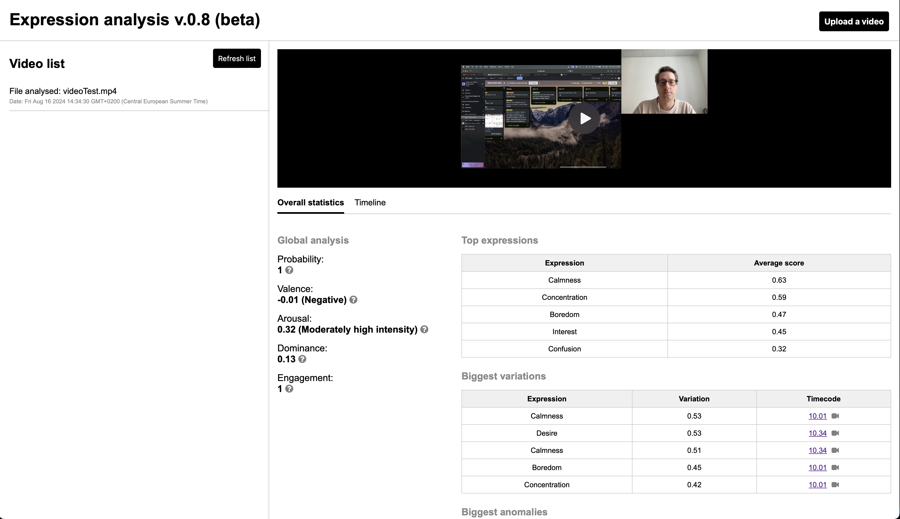
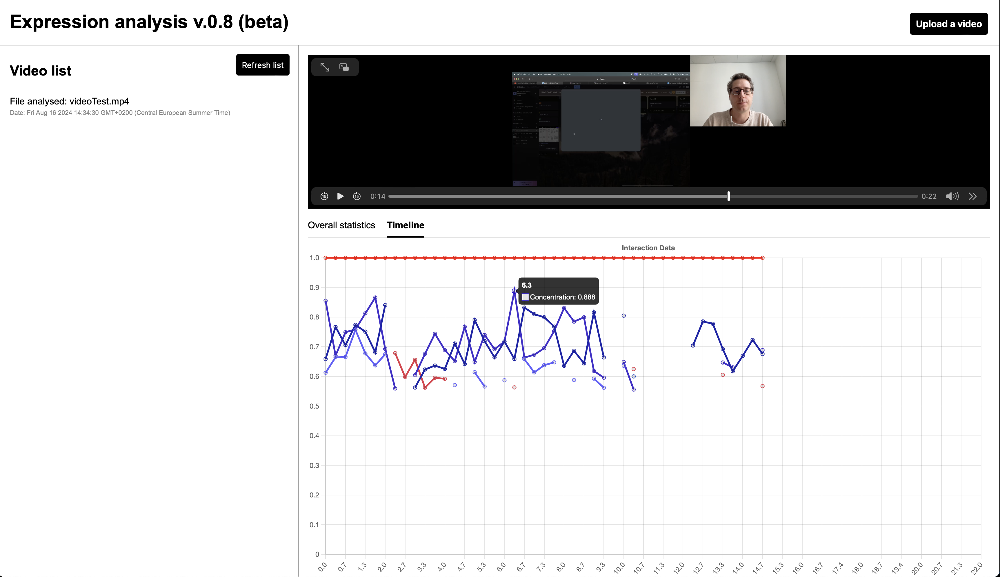

Un outil d'analyse d'expressions faciales et du discours
Contexte
Les tests utilisateurs qualitatifs génèrent beaucoup de données et doivent parfois être organisés dans des délais très courts et sans binome. Même si des outils existent pour gagner du temps, avec l'IA notamment, la fiabilité n'est pas suffisante pour obtenir une bonne qualité sans une vérification humaine importante.
J'ai créé un outil qui me permet d'analyser rapidement les expressions faciales et la tonalité du discours.
Comment ça marche ?
Il fonctionne avec un enregistrement de l'écran de l'utilisateur et d'une caméra dirigée sur le visage. Le logiciel OBS est ensuite utilisé pour regrouper les deux flux en une seule vidéo qui sera analysée par l'outil. L'avantage de cette méthode est que l'on peut effectuer des tests sur n'importe quelle machine : celle du designer ou du participant, il suffira dans ce cas d'une caméra amovible et d'une carte d'acquisition HDMI compatible avec n'importe quel ordinateur (ou presque).
Cet outil peut :
- donner vue synthétique des expressions et des sentiments d'un utilisateur sur une session donnée
- visualiser en temps réel sur la vidéo les pics d'expressions positives et négatives
- analyser le discours pour en faire ressortir les paroles positives et négatives


Mais pourquoi faire ?
Le but principal est de factualiser le travail d'analyse et ainsi de réduire les biais. Par exemple : un utilisateur peut donner une bonne note de satisfaction, avoir un taux de réussite correct mais l'analyse d'expression indique beaucoup de confusion à une certaine étape. En poussant l'analyse nous pouvons voir que ces expressions se retrouvent dans une majorité des tests : cela nous donne une opportunité d'amélioration qui, sans cela, pourrait être perdue dans l'analyse macro. Cet outil peut aussi être utilisé pour des tests A/B, de compréhension d'interfaces ou encore d'analyse de complexité de tâches.
Enfin, il peut être utile dans le cas de tests sur des produits qui requièrent une analyse particulière de l'attention : un logiciel de surveillance bancaire ou encore des interfaces complexes en temps réel, par exemple. Il donne la capacité de ne pas se baser uniquement sur des valeurs auto reportées qui peuvent être influées par la présence du modérateur.
L'avantage de cet outil est d'être une option à faible coût et flexible à l'usage, les solutions équivalentes du marché pouvant rapidement atteindre plusieurs centaines d'euros mensuels. De plus, c'est un gain de temps durant l'analyse pour classer et prioriser les constats.